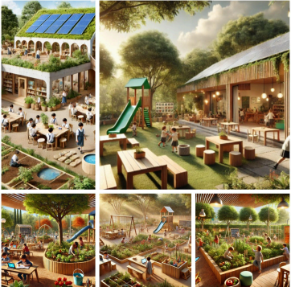

Plan de Estudios
El programa académico está diseñado para fomentar la creatividad y la conciencia ecológica.

Organización del Centro Educativo
El proyecto se organizará en tres etapas de desarrollo según las edades de los niños, con un enfoque progresivo:
- De 3-5 años: Exploración Sensorial y Juego Libre.
Los niños comenzarán explorando el entorno natural a través de juegos sensoriales para familiarizarse con los recursos naturales. Se organizan actividades de construcción libre usando materiales naturales y reciclados (por ejemplo, crear figuras con palitos, piedras o cartón). Se realiza una introducción a los conceptos básicos de reciclaje y cuidado del medio ambiente a través de juegos como "El juego del reciclaje" y canciones sobre el cuidado de la naturaleza.
- De 6-8 años: Proyectos interdisciplinarios sobre sostenibilidad y bioconstrucción.
Los niños crearán pequeños proyectos de bioconstrucción utilizando materiales naturales como barro, madera, piedra, o reciclados como cartón y botellas plásticas. A través de juegos de roles, los niños aprenderán a "ser arquitectos" de sus propias construcciones sostenibles. Se realizarán actividades de diseño de mini jardines o huertos escolares con materiales reciclados.
- De 9-12 años: Creación y desarrollo de Proyectos de Bioeconomía y Sostenibilidad.
Los niños trabajarán en proyectos más complejos, como la construcción de un pequeño invernadero o la creación de productos reutilizables a partir de materiales reciclados. Se organizarán actividades donde los niños aprenderán cómo las plantas pueden ser recursos valiosos para la bioeconomía (por ejemplo, utilizando plantas para crear tintes naturales o productos reciclables). Los estudiantes desarrollarán proyectos de economía circular aplicando los principios de reutilización y reducción de residuos.
Posible Plan de Estudio Integrado
- Ciencias Naturales y Sostenibilidad: Contenidos de ciencias naturales con una carga horaria predominante. Aplicación práctica en ABP que busquen solucionar de una forma sustentable problemas relacionados a la gestión de los bienes comunes naturales.
- Matemática integrada: Contenidos de matemática como por ejemplo: Números y operaciones básicas, Geometría y Mediciones, Estadística y probabilidad, Matemáticas financieras.
- Tecnología y STEM: Diseño de prototipos tecnológicos sostenibles (p. ej., sistemas de energía solar caseros).
- Idiomas y Comunicación: Conocimiento avanzado del inglés con énfasis en vocabulario relacionado con la sostenibilidad y la tecnología. Dominio del español como lengua madre.
- Educación Artística: Uso del arte como medio para expresar y promover la conciencia ambiental.
- Desarrollo Personal y Social: Talleres de habilidades emocionales, resolución de conflictos y ciudadanía global.
- Ciencias Sociales Integradas: Conocimiento de geografía, historia y educación para la ciudadanía que les permita a los estudiantes formar una cultura general.
- Soberanía Alimentaria: En esta área se pretende que los estudiantes establezcan una relación consciente con los alimentos. Se desarrollarán conceptos teóricos así como también talleres de cocina donde se aprovechen los alimentos producidos en la huerta orgánica.
- Huerta y Jardines Orgánicos: Materia con un predominio de instancias prácticas, en las que se promueven los aprendizajes a través de la experiencia. Se acompañarán las diferentes instancias prácticas de construcción y mantenimiento de huertas y jardines, convirtiendo así las aulas en abiertas y vivas.
Evaluación y Perfiles de Egreso
La evaluación es basada en proyectos prácticos y autoevaluación, enfocada en el progreso del estudiante.
- Proyectos y Experiencias Prácticas: Los niños serán evaluados a través de proyectos integradores que combinan diferentes áreas de conocimiento, como ciencias, arte, y habilidades prácticas (por ejemplo, el diseño y cuidado de un huerto).
- Autoevaluación y coevaluación: Los pilares clave para permitir a los estudiantes reflexionar sobre su trabajo y recibir retroalimentación constructiva de sus compañeros.
- Indicadores de Sostenibilidad y Valores: Se medirán prácticas sostenibles como el reciclaje, cuidado del medio ambiente, participación activa en actividades comunitarias y la demostración de habilidades blandas como empatía, trabajo en equipo, liderazgo y resolución de conflictos.
Perfil del Egresado
Los estudiantes que egresarán de Eco Aprende serán individuos preparados para enfrentar los desafíos de un mundo en constante cambio con un enfoque responsable, creativo y sostenible. Los mismos tendrán la capacidad de:
- Aplicar principios de sostenibilidad en su vida diaria, como el cuidado del medio ambiente, el uso consciente de recursos y la promoción de prácticas ecológicas.
- Desarrollar habilidades de liderazgo que les permitan trabajar en equipo, comunicar sus ideas con claridad y guiar a otros hacia metas comunes.
- Practicar valores como respeto, responsabilidad, solidaridad y empatía en su interacción con los demás.
- Mantener una actitud curiosa y abierta hacia el aprendizaje a lo largo de su vida, con habilidades para investigar, experimentar y construir nuevos conocimientos.
- Poseer herramientas emocionales y cognitivas para adaptarse y prosperar en un entorno en constante evolución.
- Reconocer la importancia de vivir en armonía con el medio ambiente, disfrutando y respetando los recursos naturales.
Financiamiento y Modelo Económico
1. Cuota mensual: La familia de cada estudiante debería abonar una cuota mensual.
2. Becas y subvenciones: Se buscaría apoyo de organizaciones internacionales, empresas privadas y entidades gubernamentales para ofrecer becas.